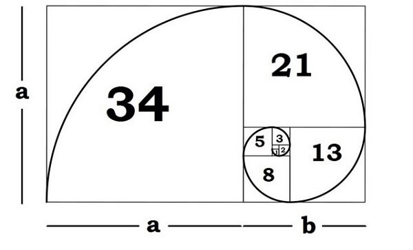
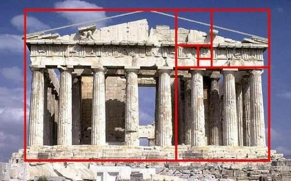
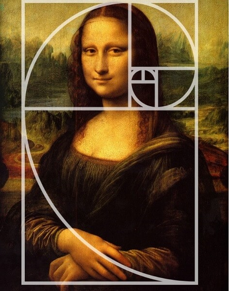
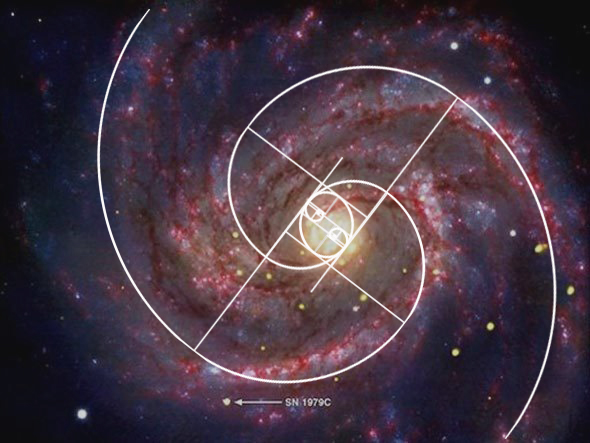
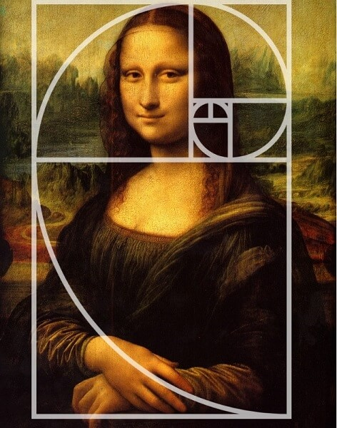
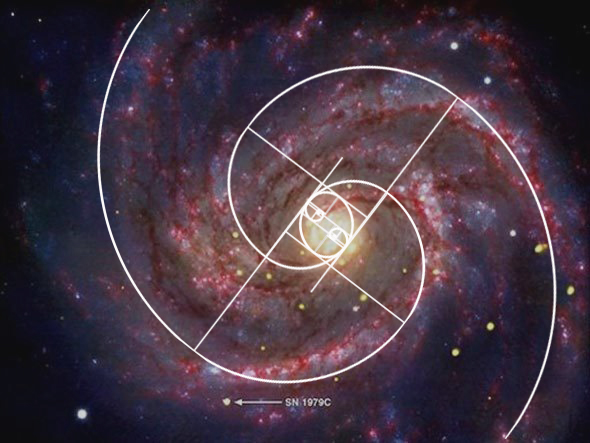

Proporção Áurea por Bruna Fischer e Clarissa Schmidt
O que é Proporção Áurea?
Proporção áurea é uma constante real algébrica aplicada que é utilizada na arquitetura, nas artes e pode ser encontrada até na natureza
Para que serve a proporção áurea?
Dizem que os antigos egípcios empregaram a proporção áurea para construir as Pirâmides de Gizé e os antigos gregos fizeram uso dela para projetar alguns de Page 2 seus mais importantes monumentos. a Proporção Áurea está em alguns monumentos arquitetônicos.
Como fazer o cálculo da proporção áurea?
A Proporção Áurea é uma constante real algébrica irracional. Ela surge, por exemplo, quando você divide uma linha em dois pedaços (A e B), de forma que a razão entre eles (A/B) é igual à razão entre a linha inteira e o pedaço maior ((A+B)/A). Isto é aproximadamente igual a 1,618
Aonde encontramos a proporção áurea no nosso dia a dia?
Essa proporção é muito apreciada na arte, e está contida em toda natureza, primeiramente no corpo humano, comçando pelo DNA. A proporção aurea tabem é vista no comportamento da refração da luz, nos atomos, nas vibraçoes sonoras, no crescimento das plantas, nas espirais das galaxias, no marfim de elefantes, nas ondas de oceanos, enfim.
Numero de ouro
Número de ouro é um número irracional, constante e real, que representa matematicamente a perfeição na natureza. Ele é representado pela letra grega phi, inicial de Fídias, escultor e arquiteto encarregado da construção de Pártenon, em Atenas, também representada pelo símbolo Φ.
Como é calculado o número de Ouro?
O número de ouro é aproximado pela divisão do enésimo termo da Série de Fibonacci (0, 1,1,2,3,5,8,13,21,34,55,89,..., na qual cada número é a soma dos dois números imediatamente anteriores na própria série) pelo termo anterior. Essa divisão converge para o número áureo conforme tomamos cada vez maior.
Imagens:
 


